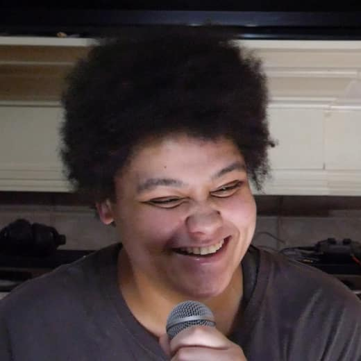
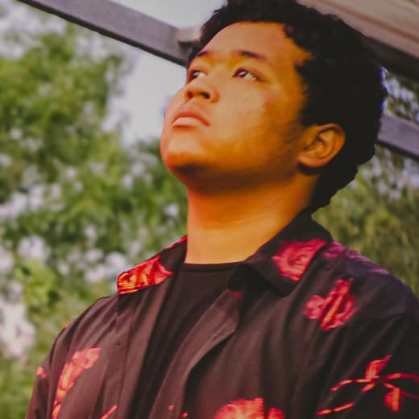

Classified // handle with gloves 29.66°N 95.24°W — South Houston, TX
The Charred
Rebellion
A grunge-inspired band from South HTX fusing themes of the occult, conspiracy, and everything in between.
File 01 — Personnel
The Band
The Charred Rebellion came up out of South Houston playing grunge the way it was meant to be played: loud, warm, and a little haunted. The songs dig into the occult, the conspiratorial, and everything in between — burned-out riffs, heavy low end, and hooks that stay with you like the humidity. Filed under grunge, hard rock, heavy.
-
Tiffany Huff
Lead singer · guitarist · flautist · songwriter
-
Jeffrey Huff
Drummer · producer
-

Ashley Huff
Lead guitarist · multi-instrumentalist · producer
-

Jacoby Cantu
Bassist
-
Doug Huff “DJ Wrekk”
Engineer · songwriter · producer · film director · technologist
File 02 — Recordings
Music
TCR — Demos & Jams · Bandcamp · 2025
thecharredrebellion.bandcamp.com ↗
File 03 — Surveillance log
Shows
No upcoming shows disclosed
New dates surface here first. For early word, watch the Instagram feed.
Bookings & press → DM @thecharredrebellion
File 04 — Field evidence